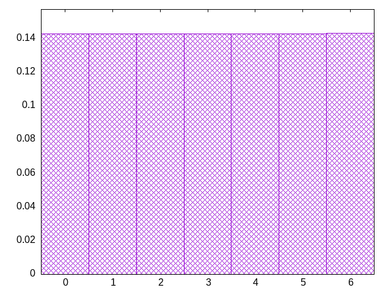
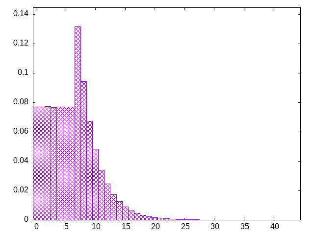

seamless variations on bag -- a 7-piece bag which is filled from a second 7-piece bag
ozislsttljjzsoistziojztsltliooizzjjttlolszijjzitsloolsiijzstlosljiittlzzjjsootslijszlootljtiszozjoljlzistjioslljotitjiosozliltztsijsitolltzsitsizozjiotlsoijizlltozistjotozlszsotjizllozstitlsioztoijtisjtsoolziljitsjzoloitlztisojlsloitjizszotljsliszjtolszlizijjsozotsliljtoosijziltzsjlijlziozjtlitzlozitotljssjooiiltstjjzsltilsozjittzjslislotztsojlilzissjlotjzzsstotlizsjotozllijiotjozsjltiotlsilszotzjiiojslzstilojstltilozosztlijzolizsostztojlijositzzsiojtllozjziolsjtsitzliltoitssiojjolltzsjizioltzolztjoslotilszjotlzitjlzitlzssojiztilltoszjilsiltsjzooiszljijsozzsilljtioostzjstjzitlzltszjilolzotssizojjltiotozzstjloojizitlsoolzsjjizsollozjttzossiilljzozsistljzozittjijsoltzoitjlotszzljisoistzzlistsjlizztssjitoztlzjostzllzsojtiilszoltszijioljszzlisotsjjliitztlzssiljoottzsljzoiltzsozljjltsitzisoltzijsliojszjosttilzjzlsisoztjisizoztlissiltjoizsizsltloszoisiltslozjsiztsiojstojlilizsostjljztolijisstjloztjzijliltoztsslitojzjsilitljozsszoljtjtiiolsoztszotllojztsszotllitissjjoliitsjlzljissjotzijtslolj
bagginess: 0.0372
bagginess6: 0.4287
distribution1_maxgap: 0.00017899999999998473
distribution2_maxgap: 0.010640010640010642
distribution3_maxgap: 0.001708003416006832
distribution4_maxgap: 0.00018600055800167397
diversity: 5.4
entropy: 11.185
evenness_diff: 5.762
evenness_same: 4.427
maxdrought: 40.7
maxflood: 2
peakdrought: 7.0
repchance: 0.0770
seq4_coverage: 0.9271
seq4_follow: 6.985
distribution1_graph:

drought_graph:

similarity: (lower is more similar)
| 0.042 | deepbag_window4 |
| 0.044 | wet2 |
| 0.086 | weight_lin_pure |
| 0.091 | balanced5 |
| 0.092 | weight |
| 0.095 | weight2 |
| 0.156 | bag2 |
| 0.159 | deepbag_fixed7 |
| 0.160 | wet_pure |
| 0.177 | shift7 |
| 0.179 | bag_pure |
| 0.179 | bag |
| 0.192 | shift3_5 |
| 0.251 | balanced7 |
| 0.255 | tgm |
| 0.259 | tgm_pure |
| 0.263 | wet |
| 0.342 | nes_pure |
| 0.348 | deepbag_fixed4 |
| 0.357 | weight_exp |
| 0.367 | nes |
| 0.387 | seamless_bag2_pure |
| 0.387 | deepbag_window7 |
| 0.398 | tgm_tap_pure |
| 0.401 | tgm_tap |
| 0.408 | shift10_5 |
| 0.415 | bag3 |
| 0.421 | deepbag_window10 |
| 0.421 | weight_exp_pure |
| 0.429 | balanced9 |
| 0.432 | seamless_bag3_pure |
| 0.441 | shift14 |
| 0.445 | bag4 |
| 0.455 | deepbag_fixed10 |
| 0.475 | shift21 |
| 0.485 | balanced_long_mul_pure |
| 0.489 | balanced_long_add_pure |
| 0.490 | seamless_bag_pure |
| 0.504 | ti |
| 0.604 | fullrandom_pure |
| 0.608 | fullrandom |
| 2.172 | shift1_75 |
| 2.377 | repeat_recent_pure |
| 4.684 | repeat_last_pure |
| 8.060 | flatbag |
| 8.060 | flatbag_pure |